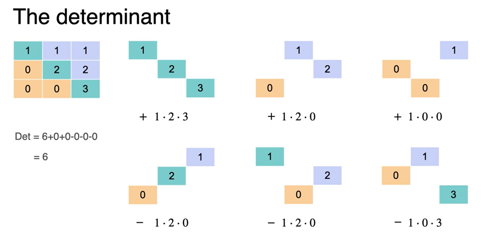

Módulo 1: Sistema de equações lineares
Módulo 1: Sistema de equações lineares
Sistema de sentenças
- Um sistema de sentenças pode ser Completo; Redundante e Contraditório
- Os sistemas completos são não singulares
- Exemplo: {the dog is black; the bird is red; the cat is white}
- Os sistemas Redundantes e Contraditórios são singulares
- Exemplo → redundante: {the dog is black; the dog is black;the dog is black} ou {the dog is black; the dog is black; the bird is red}
- Exemplo → contraditório: {the dog is black; the dog is white; the bird is red}
Sistema de equações
- Os sistemas de equações se comportam de forma similar aos sistemas de frase.
- Podem ser singulares e não singulares.
- Exemplo de um sistema de equações:
- apple + banana + cherry = $10
- apple + 2banana + cherry = $15
- apple + banana + 2cherry = $12
- Com essas informações podemos determinar os preços das frutas
- O sistema de equações resultante é:
- a + b + c = 10
- a + 2b + c = 15
- a + b + 2c = 12
- Sistema Completo - não singular → existe uma única solução.
- Sistema Contraditório - singular → não existe solução.
- Sistema Redundante - singular → infinitas soluções
- Linear ⇒ a + b = 10 / 2a + 3b = 15
- Não linear ⇒ \(a^2 + b^3 + c = 23\)
- Num sistema linear, uma única solução, se encontra quando colocado em um gráfico, seguindo o sistema de coordenadas a solução se encontra nos pontos em comum nas duas retas.
Noção geométrica de sigularidade
- As constantes não importam quando estamos definindo sistemas sigulares e não sigulares. Isto é, quando pegamos um sitema de equações e usamos o 0 como constante, o sistema de nenhuma soolução passa a ter infinita soluções.
Matrizes singulares e não singulares
- Sistema 1 → matriz
\(\begin{matrix} a + b = 0 \\ a + 2b = 0\end{matrix}\) → \(\begin{matrix} 1 & 1 \\ 1 & 2 \end{matrix}\)
- Sitema 2 → matriz
\(\begin{matrix} a + b = 0 \\ 2a+2b=0 \end{matrix}\) → \(\begin{matrix} 1 & 1 \\ 2 & 2 \end{matrix}\)
- As matrizes, assim como os sitemas de equações lineares podem ser singulares e não singulares.
- Matrizes não singulares possuem uma única solução
- Matrizes singulares possuem infinitas soluções.
- Podemos descobrir se um sistema de equações é singular ou não singular, basta simplificarmos as equações ingualando as soluções a 0.
Dependência e independência lineares
- Se uma equação (linhas das matrizes) forem dependentes (podemos determinar uma linha aplicando uma operação com outras linhas) da outra ou vice-versa, temos que as equações (matrizes) são dependentes e lineares. Já o inverso indica não linearidade e independencia.
- Se a matriz for singular, as linhas são dependentes. Do contrário são independentes.
Determinantes
- O determinante é a forma mais fácil de determinar a singularidade das matrizes.
- Se o determinante for igual a 0 a matriz é singular (dependente), caso contrário ela é não singular (independente).
A matriz \(A ={\begin{matrix} a & b \\ c & d \end{matrix}}\) é singular se, \(a~b*k = c~d\)
\(a*k = c\) & \(b*k = d\)
\(\frac{c}{d} = \frac{d}{b} = k\)
\(a*d = b*c\)
assim, o determinante é definido como: \(a*d - b*c = 0\) e a matriz é singular.
Agora consedere a matriz B = \(\begin{matrix} 1 & 1 & 1 \\ 0 & 2 & 2 \\ 0 & 0 & 3 \end{matrix}\) o determinante é definido como:

Se todos os elementos abaixo da diagonal principal for 0 o determinante é definido como a multiplicação dos elementos da diagonal principal.